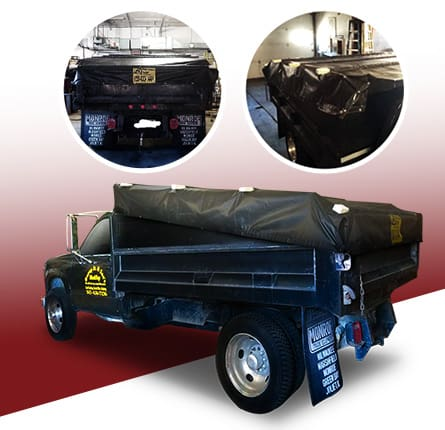

Construction details
The published design uses 18 oz. vinyl, reinforced pockets for wooden boards and 2-inch seatbelt webbing at the edges.

Precision Tarp product photograph
MANUFACTURING & INSTALLATION / ELGIN, IL
Custom roll tarps made to the dimensions of your box, with reinforced edges and attachment details to suit the application.
Include the intended use and approximate dimensions in your request. Final dimensions, hardware, colors and pricing need confirmation.
Prepare a product requestInclude dimensions with units, intended use and any existing equipment details. Final fit and price need confirmation.
Original product informationThe published design uses 18 oz. vinyl, reinforced pockets for wooden boards and 2-inch seatbelt webbing at the edges.
Discuss the box dimensions, desired side drop, attachment layout and color. Send a sketch with units and label whether your measurements describe the box or the finished tarp.